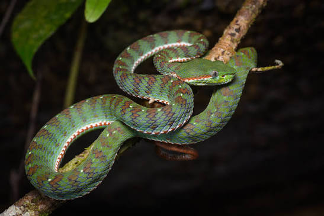
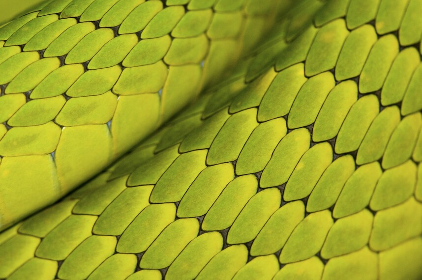
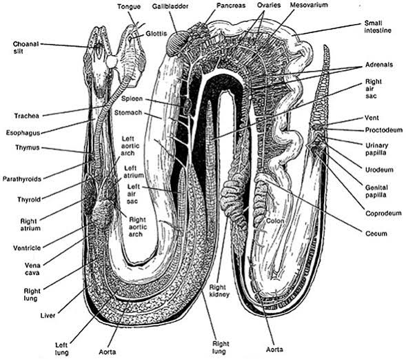
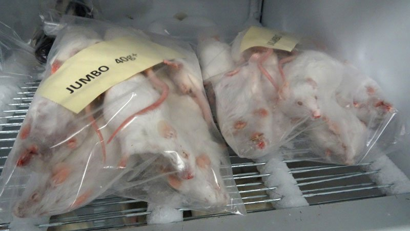
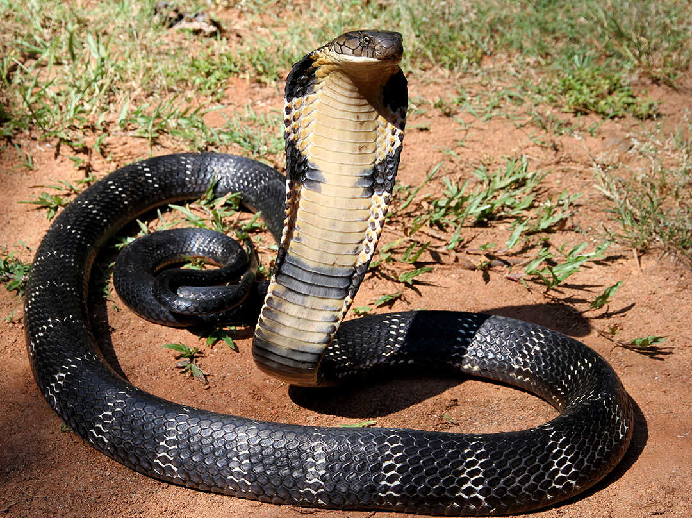
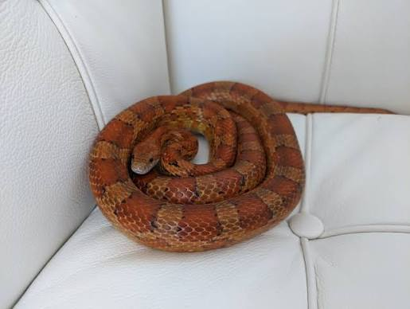
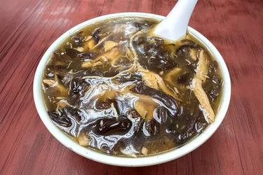

There are over 4,000 types of snakes in the world. They are widely distributed, living everywhere except in Antarctica, Iceland, Ireland, Greenland, and New Zealand, and in some American states, those being Alaska, Hawaii, and Maine.

About 600 species are venomous. Of those, only about 200 can kill or significantly wound a human. Non-venomous snakes, which range from harmless garter snakes to the not-so-harmless python, dispatch their victims by swallowing them alive or constricting them to death. Whether they kill by striking with venom or squeezing, nearly all snakes eat their food whole, in sometimes astoundingly large portions.
Almost all snakes are covered in scales. As reptiles, they’re cold blooded and must regulate their body temperature externally. Scales serve several purposes: They trap moisture in arid climates and reduce friction as the snake moves. Several species of snakes are mostly scaleless, but even those have scales on their bellies.

Anatomy and Physiology Body Structure: Lacks external limbs, ear openings, and movable eyelids. Internal Organs: Features elongated organs where the left lung is reduced or absent. Waste Removal: Lacks a urinary bladder and excretes nitrogenous waste primarily as solid uric acid or urates. Skin Shedding: Undergoes periodic ecdysis (sloughing) to remove parasites and accommodate growth.
Senses and Feeding Jacobson’s Organ: Uses a specialized vomeronasal organ on the roof of the mouth via a flicking tongue to track chemical scent trails in the air. Jaws and Swallowing: Possesses loosely jointed lower jaw bones and elastic ligaments that let them swallow large prey whole. Venom Systems: Utilizes modified salivary glands and specialized fangs to inject toxic proteins that immobilize prey or aid digestion.

Scan this QR code to learn more about Snakes!!!

Random Fact Generator Click this button to generate random facts around Snakes.
The facts will appear here
Scan this QR on your phone for the phone version on the website
Diet Considerations: Snakes don't need to eat every day. The frequency at which they need to eat is determined by their size and age.
Some of the things snakes might eat include:
Baby mice or rats
Adult mice or rats
Young birds like chicks

What Can't Snakes Eat? Snakes can't be fed: Fruits
Vegetables
Grains
Processed foods
All snakes are carnivores—they should eat whole prey only as much as possible for a balanced diet. If offering human foods, they typically can’t deviate from raw meats or eggs.
Live vs Frozen Prey for Snakes: Frozen prey is the diet of choice for snakes. Pros: Safest feeding option
More convenient to store
Providing live prey incurs ethical concerns
Cost effective
Smaller chance of parasite transmission Cons: Some snakes, especially when sick, need the movement and smell of live prey to entice them to eat

How to Feed a Snake You’ll want to purchase appropriately sized whole frozen prey from a pet store and keep it stored in a freezer. When feeding day is approaching, transfer the prey you plan to feed to its own bag and move from freezer to the refrigerator to thaw. Food should be ready in 1-2 days. A few hours before planning to feed, take the prey out of the refrigerator so they can come up to room temperature. Make sure you have washed your hands and do not smell like the prey, then transfer your snake from their enclosure to an appropriately sized plastic container with air holes. Place the whole, thawed prey inside with them. Wait for your snake to fully consume their meal before transferring them back to their main enclosure. In snakes that stress easily and are already reluctant to eat, it may be more appropriate to feed prey in their enclosure

These snakes play a vital role in ecosystems by controlling populations of rodents, birds, amphibians, and other small animals. Each species has developed unique traits that help it survive in different environments.
1. King Cobra The King Cobra is the longest venomous snake in the world, reaching lengths of up to 5.5 meters. It lives in forests across South and Southeast Asia. Unlike most snakes, the king cobra mainly eats other snakes, including venomous ones. Its scientific name, Ophiophagus, means "snake eater." When threatened, it raises the front part of its body, spreads its hood, and hisses loudly to warn predators. Although its venom is very powerful, king cobras typically avoid humans unless they feel threatened.

2. Green Anaconda The Green Anaconda is one of the heaviest snakes worldwide. It is native to the swamps, rivers, and wetlands of South America, where it can grow longer than 9 meters and weigh over 200 kilograms. Anacondas are non-venomous constrictors. They kill prey by wrapping their strong bodies around animals and tightening until the prey can no longer breathe. Their diet includes fish, birds, capybaras, caimans, and occasionally deer.

3. Ball Python The Ball Python is a small, non-venomous snake that are found in West and Central Africa. It usually grows between 1 - 1.5 meters. This species is named for its defensive habit of curling into a tight ball when scared. Ball pythons are gentle and relatively easy to care for. Due to these reasons, they have become one of the most popular pet snakes in the world. They primarily hunt rodents and birds through constriction.

4. Black Mamba The Black Mamba is one of Africa's most feared snakes. Despite its name, it is usually gray or olive-colored as the name refers to the dark inside of its mouth. Black mambas can grow over 4 meters long and are among the fastest snakes, able to move at around 20 km/h over short distances. Their venom targets the nervous system and can be deadly without quick medical attention. However, they typically prefer to flee rather than confront people.

5. Corn Snake The Corn Snake is a harmless, non-venomous species found in the southeastern United States. Adult corn snakes usually range in size between 1.2 and 1.8 meters. These snakes are excellent climbers and help farmers control rodent populations. Their striking orange, red, and black patterns have also made them popular pets. They kill prey through constriction and pose no major threat to humans.

Snake Quiz
Not submitted
Snake Soup Snake soup is one of Hong Kong’s most storied dishes. Tracing its origins back over 2,000 years to ancient China, it’s considered both a delicacy and a form of traditional medicine, with early records suggesting that snake meat has health benefits. The dish became particularly popular in the southern provinces, including Guangdong.
When Hong Kong developed as a port city in the 19th and 20th centuries, waves of migrants from Guangdong brought their food traditions with them, including snake soup. It was often made with up to five species of snakes, symbolizing wealth and abundance. Over time, it became a seasonal staple sold in specialized shops, particularly during autumn and winter.
Despite its humble appearance, snake soup is a labor-intensive dish. Traditionally, multiple types of snakes, such as water snakes, rat snakes, and cobras, are used to create a complex flavor profile. Today, due to regulations and availability, recipes vary, but the principle ingredients remain the same.
Snake meat is carefully cleaned and boiled, then shredded into fine, delicate strands. Oftentimes, the meat is shredded in such a way that first-time eaters mistake it for chicken or fish.
The broth is equally important. It’s normally made by simmering pork bones, chicken, dried seafood, ginger, dried orange peel, lemongrass, dried mushrooms, and more Chinese herbs for several hours to develop a savory base. Then, the shredded snake meat is added to the broth along with thickening agents like cornstarch or ground almonds, giving the soup its signature, slightly viscous texture. The final touch often includes chrysanthemum leaves, thin strips of egg, and sometimes fried wonton crisps or lemon leaves for garnish.
Cultural significance Snake soup is considered a warming food in the framework of traditional Chinese medicine, meaning it helps restore internal heat during colder months — hence its popularity from late autumn through winter.
The dish is also associated with strength and vitality. Snake meat is believed to improve circulation, nourish the skin, and boost overall energy.
Beyond the purported nutritional benefits, snake soup carries a sense of nostalgia and heritage in Hong Kong.

Snake Curry Found in some regions of India and Southeast Asia.
Snake meat is cooked in a spicy curry with onions, tomatoes, garlic, ginger, and local spices. It is typically served with rice or flatbread.
Snake meat is generally high in protein and low in fat. People describe its taste as being similar to chicken, frog legs, or firm white fish, depending on species and how it is cooked.

Snake Mini-Game
The game goes like this. You control the snake (using A and D and W for PC and the buttons for mobile) and can go right or left and jump. Avoid the hazards and get to the end to win. Press (R on PC or the reset button on mobile) to reset
Not Running